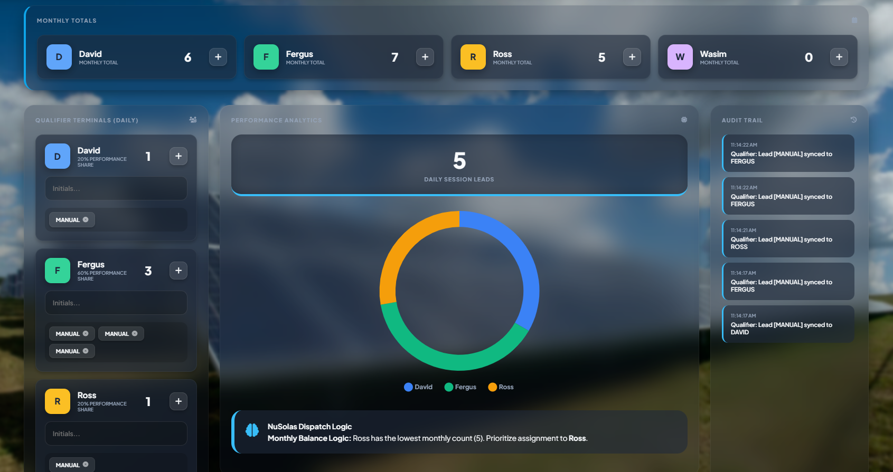

LeadTrack
A leads-tracking tool that helps a sales team log qualified leads, share them out fairly and see performance at a glance.

What needed solving
Managing potential clients can be chaotic for growing businesses. Many teams rely on messy spreadsheets or disconnected communication tools to track their leads, so data ends up scattered.
Without one central system, follow-ups get missed, revenue is lost and nobody has a clear view of the sales pipeline. Sales teams end up spending time hunting for information instead of building relationships.
How I approached it
I built LeadTrack while working in sales and marketing at NuSolas Energy, as an easier way to track qualified leads. It replaces spreadsheets with a clean, central hub for every client interaction.
A shared dashboard shows each person’s daily and monthly totals as they happen, so the team can see the workload, keep allocation fair and make sure no prospect slips through the cracks.
What it does
- 01
Qualifier terminals
Each team member logs qualified leads through the day from their own terminal, with initials for a clear record.
- 02
Fair dispatch logic
Compares everyone’s monthly totals and suggests who should get the next lead, so work is shared evenly.
- 03
Performance analytics
Daily and monthly totals with charts showing each person’s share of the work.
- 04
Shift history and audit trail
Closed shifts are archived, and every action is logged so nothing goes missing.
- 05
Team tools
Add or reorder team members by dragging, and export the data to CSV in one click.
The toolkit
A closer look
